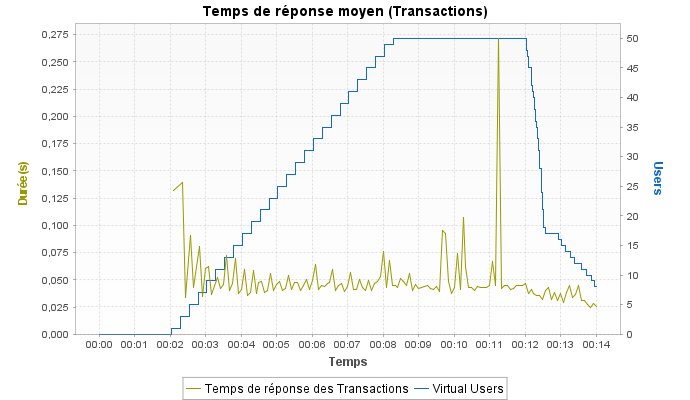

Temps de réponse moyen (Transactions)
Graphe

| Min | Moyenne | Max | Médiane | Moy-90% | Ecart type |
|---|---|---|---|---|---|
| 0,025 | 0,05 | 0,272 | 0,044 | 0,046 | 0,027 |
Notes:Affiche le temps de réponse moyen, en secondes, de toutes les Transactions pendant le test.
| Min | Moyenne | Max | Médiane | Moy-90% | Ecart type |
|---|---|---|---|---|---|
| 0,025 | 0,05 | 0,272 | 0,044 | 0,046 | 0,027 |